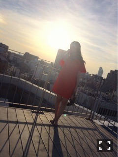

| 2016/06 06 Mon | 中元日芽香 ひめたん-0o0-その643 |
15thシングル選抜メンバーに
選んで頂きました。
綺麗事のように
「ポジションには拘らなくなりました」
なんて言っていたこともありましたが
本当はバレッタの時に見た景色が
今でも忘れられなかった......
何度も何度も腐ってきましたが
その度に皆さんが私を励ましてくれて、
背中を押してくれました
私がもう一度前を向いて頑張れたのは
皆さんの声援があったからです。
長い間お待たせしてしまってごめんね、
それでも信じて応援してくださったから
今作、久々に帰ってくることができました
本当にありがとうございます。
8作振り、2回目の選抜。
あの頃は何も結果を残せずに終わった、
それからもう一度チャンスを掴むまでに
2年半もかかってしまいました。
今度こそはこの場所に居続けたい、
そのためにはこれまで以上に
頑張らなければいけない。
選抜の枠がどれだけ貴重なものか
私は発表の度に身を持って感じてきました
だから、慢心せず、というか
そもそもできる立場ではありませんが、
さらに高みを目指して活動していきます！
今の選抜メンバーの中で
私は一番選抜として過ごした時間が
圧倒的に短い、
吸収しなきゃいけないことが
たくさんあります、焦りよりも
今はワクワクしてます。
と同時に、アンダーメンバーとして
たくさんのことを学んで来ました
経験値を積むなら
場数を踏むことに勝るものはありません
だからこそ自信を持って言えます
私はアンダーライブで成長できたと。
そのことを少しでも選抜メンバーに伝えたい、
そうやってお互いに高め合っていけたら
いいなと思っています。
発表されてからファンの皆さんが
ブログにたくさんのコメントを
残してくださっていました、
ここには書き切れないくらい
メンバーのみんなから
素敵な言葉を貰いました、
今の私にはらじらー！という
最高にあたたかいホームがあります。
私自身、自慢できるものはないけれど
本当に周りの人たちに恵まれている、
それだけは私の誇りです( ˆωˆ )
乃木坂の一員でなければ得られなかった
出会いがたくさんあります、
そのひとつひとつが私にとって
かけがえのないものです
携わってくださる全ての方へ
感謝の気持ちでいっぱいです、
今作では少しでも恩返しできたらいいな。
とはいえまだまだ成長過程です
不器用で、頑固で、機転が利かなくて
いつもヒヤヒヤさせてばかりの私ですが
これからもどうかあたたかく
見守ってくださったら嬉しいです。
きいちゃん、一緒に頑張ろうね。
あすかちゃん、センターおめでとう！

中元 日芽香